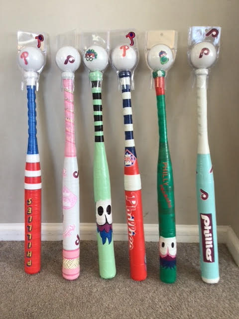
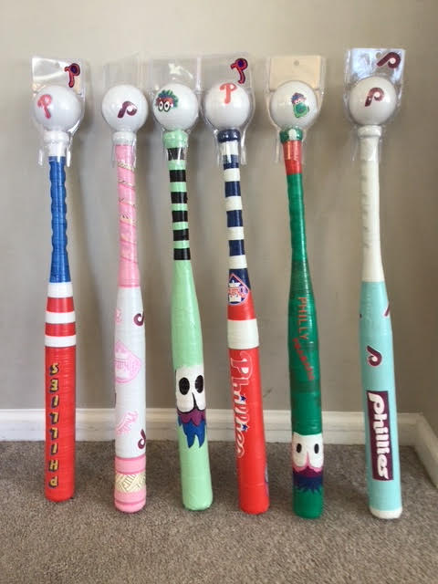
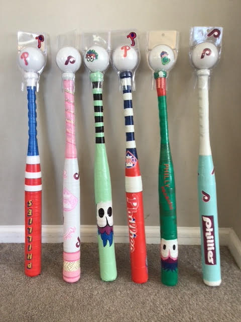

Philly Bats
 

Custom bat ideas created as they unfold. These specifically capture the Philly love.
← Back to Backyard Bats

Custom bat ideas created as they unfold. These specifically capture the Philly love.
← Back to Backyard Bats